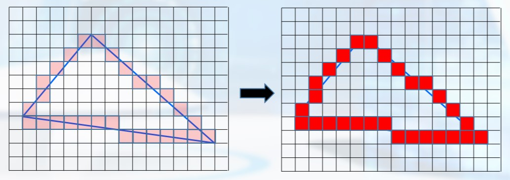
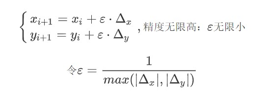
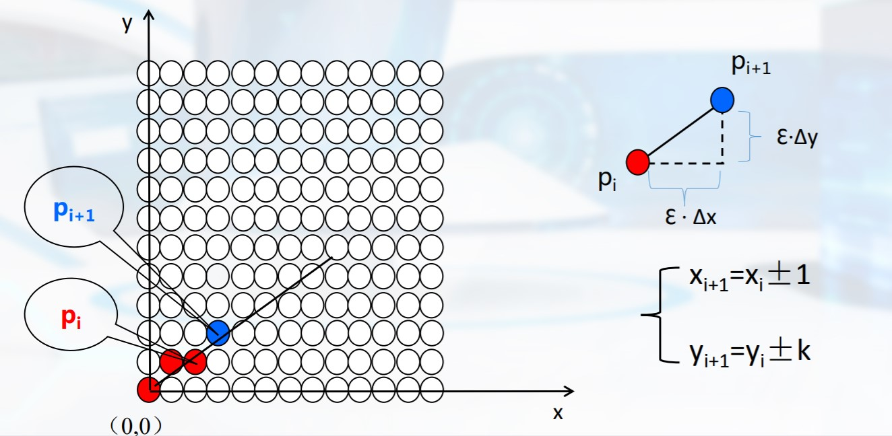
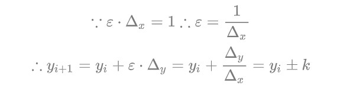
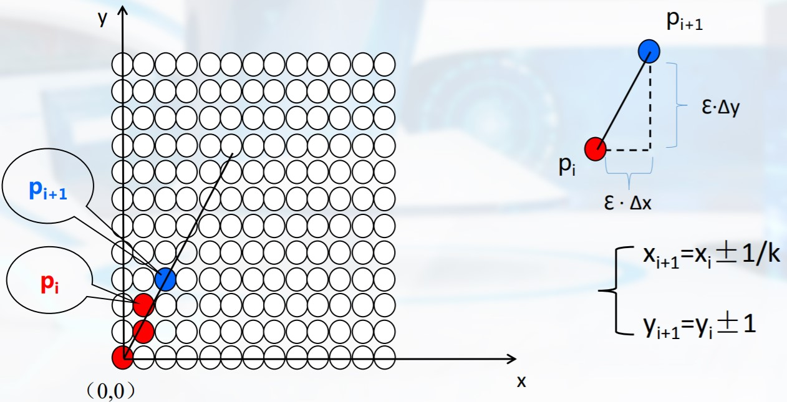
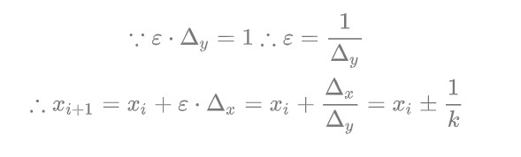

导言
在之前的教程中，我们已经实现了空窗口以及三角形的渲染。然而只是略知一二，对于渲染的具体细节，比如三角形边的绘制，我们还不太清楚。从这节开始，我们将更加深入、系统地入门图形学，先从点和直线开始
概念
光栅化（扫描转换）
分为两步(以三角形为例)：
输入三角形的定义:（1）几何信息：三个顶点的坐标（2）属性信息：颜色、光照、纹理等。
根据图形的定义在点阵单元上确定最佳逼近于图形的像素集。逼近的过程本质可以认为是连续量向离散量的转换
给像素指定合适的颜色值

直线扫描转换算法分类
逐点比较法、正负法、数值微分算法、Bresenham算法
接下来，我们主要了解数值微分算法
数值微分法（Digital Differential Analyzer,DDA）
理论


使得ε△x或ε△y中会有一个变成单位步长。算法在最大位移方向上，每次总是走一步：
情况一：斜率绝对值小于1：ε=1/|△x|,其中对y(i+1)结果四舍五入


情况二：斜率绝对值大于1：ε=1/|△y|,其中对x(i+1)结果四舍五入


代码
1 | void DDALine(int x0,int y0,int x1,int y1) |